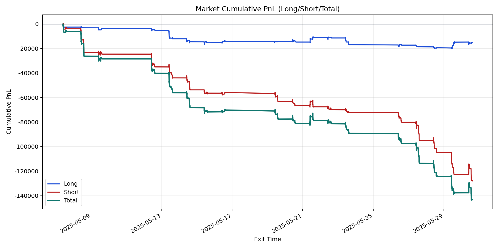
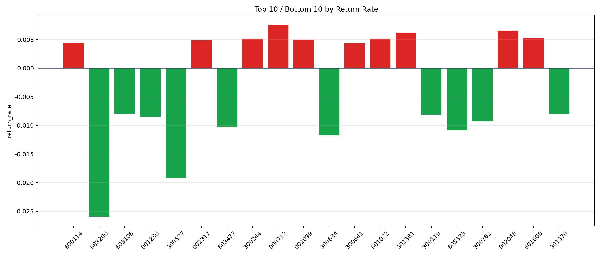

| repo_root | /home/haoranyou/data/output/dynamic_AUM_TAKER_index1000 |
|---|---|
| period_months | 1 |
| period_label | 2025-05-07_to_2025-05-30 |
| start_time | 2025-05-07 09:49:12 |
| end_time | 2025-05-30 14:43:07 |
| n_trades | 7269 |
| n_symbols | 221 |
| total_pnl | -143321.29790000033 |
| long_total_pnl | -15328.041999999114 |
| short_total_pnl | -127993.25590000121 |
| total_entry_notional | 130045992.0 |
| long_entry_notional | 38857241.0 |
| short_entry_notional | 91188751.0 |
| total_return_rate | -0.0011020816227846554 |
| long_return_rate | -0.00039447067278912347 |
| short_return_rate | -0.0014036079505025923 |
| top_symbols_by_return | ["000712", "002048", "301381", "601606", "601022", "300244", "002099", "002317", "600114", "300641"] |
| bottom_symbols_by_return | ["688206", "300527", "300634", "605333", "603477", "300762", "001236", "300119", "301376", "603108"] |

